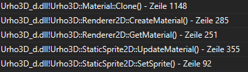

Hi there,
i was trying out Urho3D and tried to render some Sprites. I get the sprites from a file and change colors at runtime which is the reason why i think need MemoryBuffer to load them as Sprite2D.
My problem is, that my program somehow leaks memory. I checked it with Visual Studio and it shows me that i have an increasing number of Urho3D::Texture2D and Urho3D::Material objects (Texture2D is referenced by Material). Those Material objects are created through ‘SetSprite’ and as it seems they are never deleted (event though I think they should, since I remove all created Nodes from the Scene)
Am I doing something wrong here?
Below is the code I used, that’s the content of my Scene Update function (E_SCENEUPDATE event):
using namespace Urho3D;
Urho3D::ResourceCache* cache = GetSubsystem<Urho3D::ResourceCache>();
// Get a image (m_registry -> custom class that loads images from a file and changes some colors)
ImageData img_data = m_registry.get_image(20, 6, { 255, (uint8_t)Random(255), (uint8_t)Random(255), (uint8_t)Random(255) });
// Convert it to png data
std::vector<uint8_t> img_as_png = m_registry.get_image_as_png(img_data);
// Create a Urho3D::Sprite2D out of the image
SharedPtr<Sprite2D> sprite = SharedPtr<Sprite2D>(new Sprite2D(context_));
Urho3D::MemoryBuffer buffer(img_as_png.data(), img_as_png.size());
sprite->Load(buffer);
// Create a node and set the sprite
SharedPtr<Node> spriteNode(scene_->CreateChild("StaticSprite2D", Urho3D::LOCAL));
spriteNode->SetPosition(Urho3D::Vector3(0, 0, 0));
StaticSprite2D* staticSprite = spriteNode->CreateComponent<StaticSprite2D>(Urho3D::LOCAL);
staticSprite->SetSprite(sprite);
// This should clear all things up - but it doesn't.
scene_->RemoveChild(spriteNode);
GetSubsystem<ResourceCache>()->ReleaseAllResources(true);
Allocation call stack from one of the ‘surviving’ Material objects:

thanks in advance